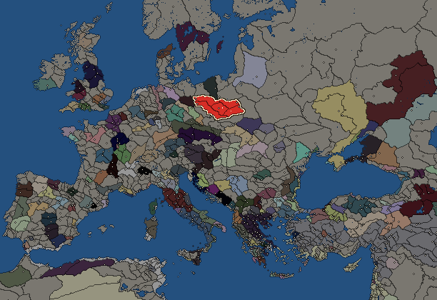
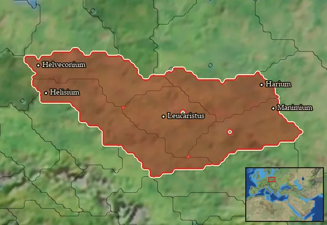

Lugii


- difficulty Medium
- Germanic culture
- believes
 Germanic
Germanic - 5 settlements
- capital Leucaristus
- 11,200 manpower
- 3 characters
- 18 faction units
- 440 regional units
The campaign brief
"The name of Lugii, spread as it is among many peoples, is the most widely extended. It will be enough to mention the most powerful, which are the Harii, the Helvecones, the Manimi, the Helisii and the Nahanarvali." – Tacitus
"Psst! You there! Don't move! I've got a javelin with your name on it in case you do. Move over here, up! Yes, on that tree! Your armed ‘companions’ are already dead. We’re so silent, you didn’t even notice us, right? Did you really think you could avoid looters by travelling up the amber road at night? Too bad. Fighting at night is our specialty. What… you're still looking for me? HAH! You’re a funny one, so I’ll let you live. You probably came from the South then, through the territories of the Boii and the Cotini? Were you heading towards the Venedi in the North? I’m sorry, but your journey must end here.
You’ve ended up in the territory of the Lugii, a league made up of several mighty tribes. You might have heard of the strongest among us; the Helvecones, the Manimi, the Helisii, the Naharvali, and finally of course the very best: us, the Harii. We are the most fearsome and ferocious of all the Lugii, as you can clearly see. Our bodies are painted to hide us from the eyes of our enemies, our shields are black as the darkest of nights. Our forests are massive, dense and protect us from being detected by strangers. If you would see us, you’d usually be dead the second after. But you’re lucky that you have met us. If you had travelled through Naharvali territory, you might have happened to stumble upon our sanctuary, where you would most certainly have met a most gruesome fate.
But we aren’t just warriors. You southerners profit greatly from trading with us, receiving furs, hides and especially that beautiful golden amber that you love so dearly. You ask if we can show you our main oppidum? My dear friend, we don’t need any of those cowardly fortified settlements that you call oppidum. Too many huts near your house and you start hating your neighbour, as they say, HA! Our villages are small and unfortified, but far from unprotected. Our strong sense of community and our courageous warriors, capable of fighting at any time of day or night, are defense enough. No matter if you’re from one of our Lugian tribes or one of those people from the darkest depths of the forests whose language I’m still not quite sure I understand: if you’re one of us, then you are in the best of hands.
Oh, I impressed you now, did I. You’d like to fight with us? Help us expand our collection of villages beyond the Oder and Vistula rivers? Well, then, let us see your worth…"
Starting settlements
Lugii begins with 5 settlements and 11,200 manpower.
| Settlement | Region | Size | Manpower | Already built | Settlement | Region | Size | Manpower | Already built |
|---|---|---|---|---|---|---|---|---|---|
| Leucaristus (capital) | Naharvalia | large town | 2,800 | 10 buildings | Helveconium | Helveconia | town | 1,900 | 3 buildings |
| Harium | Haria | town | 2,600 | 4 buildings | Manimium | Manimia | town | 1,600 | 4 buildings |
| Helisium | Helisia | town | 2,300 | 4 buildings |
What is already built in each settlement
Leucaristus, in Naharvalia: Small Treasury, Governor's Villa, Wooden Palisade, Homeland, Cisterns (Sanitation), Region Information Scroll, Roads, Basic Armoury, Slash and Burn (Crops), Shrine
Helveconium, in Helveconia: Governor's House, Homeland, Region Information Scroll
Harium, in Haria: Governor's House, Homeland, Region Information Scroll, Hunting Grounds (Rural)
Manimium, in Manimia: Governor's House, Homeland, Region Information Scroll, Horse Trainer (Rural)
Helisium, in Helisia: Governor's House, Homeland, Region Information Scroll, Mast Pasturing (Adaptive husbandry)
Homeland
Lugii's homeland is 5 regions. Only there can it install the Homeland government (more on homelands).

Haria · Helisia · Helveconia · Manimia · Naharvalia
Starting diplomacy
Allied with (2):  Boii ·
Boii ·  Scordisci
Scordisci
Trade agreements with (2):  Boii ·
Boii ·  Scordisci
Scordisci
At peace with every other faction.
Like every faction, it is also at war with the  Free Peoples, who hold every settlement no faction does.
Free Peoples, who hold every settlement no faction does.
Starting characters
| Name | Role | Age | Name | Role | Age | Name | Role | Age | |||
|---|---|---|---|---|---|---|---|---|---|---|---|
| Lugius | General | 45 | Tillo | General | 25 | Adalwolf | General | 31 |
Reforms
Open to every faction: Military innovations have arrived!, Second wave of military innovations have arrived!.
Units you can recruit
The same as in the main campaign.